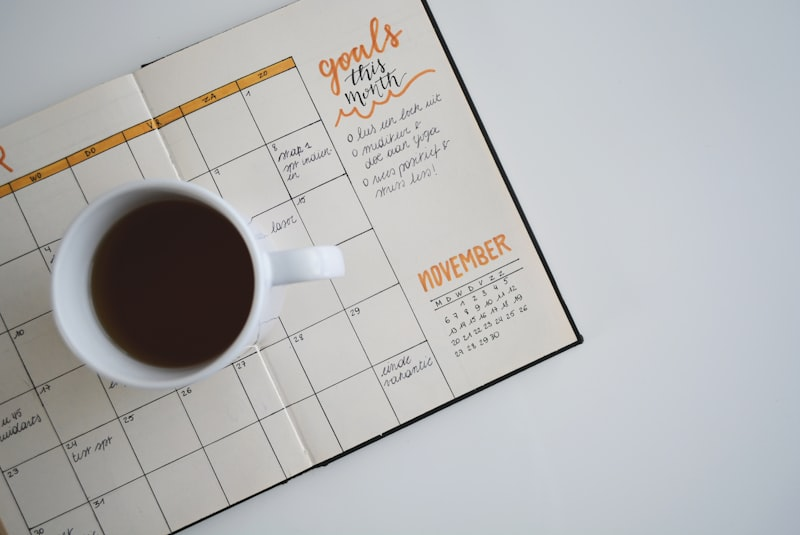

[ STUDY RESEARCH // ARCHIVE ]
Cognitive tracking, focus interval guides, & library archives.
A structured collection of technical articles on cognitive study guidelines, desk clearances, lighting scales, and book indexing.

Reading Desk: Focus Clearances
How desk partition heights and visual bounds block phone triggers during study intervals.

Active Lighting: Lux Study Ratings
Measuring lux levels across reading tables to avoid student eye fatigue in evening shifts.

Book Shelves: Catalog Airflow Scales
How room drafts and shelf gaps protect vintage book pages from dampness damage.

Study Chairs: Back Spine Support
Evaluating chair seat tilts to maintain study concentration loops for hours without pain.

Desk Drawer: Pull Clearances
Measuring drawer slide resistance weights to ensure easy access to notes.

Study Rooms: Laptop Cable Guides
How table cable boxes keep shared group counters organized and clean.

Study Loops: Group Discussion Scales
Measuring room echo limits to maintain speech clarity during team study sessions.

Open Books: Reading Eye Strains
Analyzing paper color reflections to design optimal under-cabinet book lights.

School Classrooms: Table Heights
Evaluating vertical knee clearance benchmarks for student desk layouts.

Quiet Cubicles: Noise Dampening
Measuring decibel drops across felt panels inside private study cubicles.

Writing Desks: Board Slope Angles
How angled writing pads reduce wrist strain during long essay drafting cycles.

Study Planners: Focus Timers
Calibrating timer prompts to sync study breaks directly with cognitive peak logs.